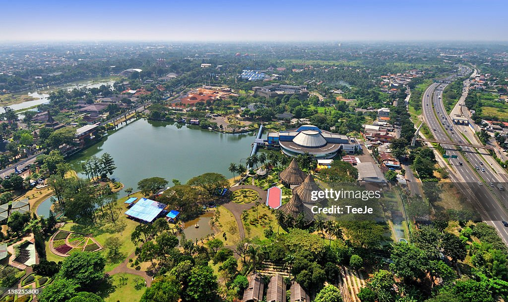
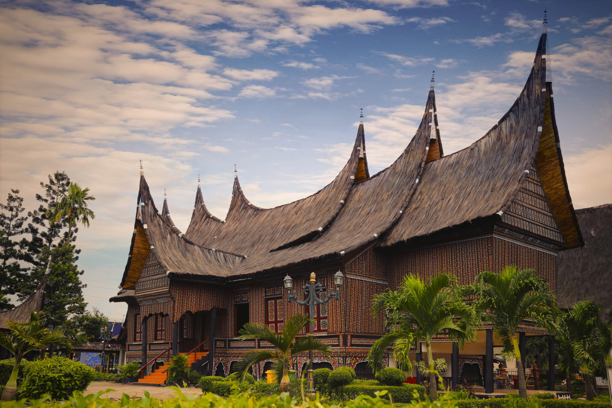
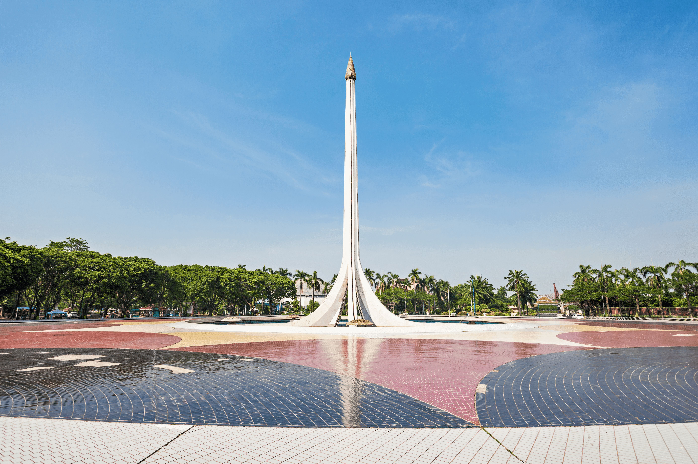
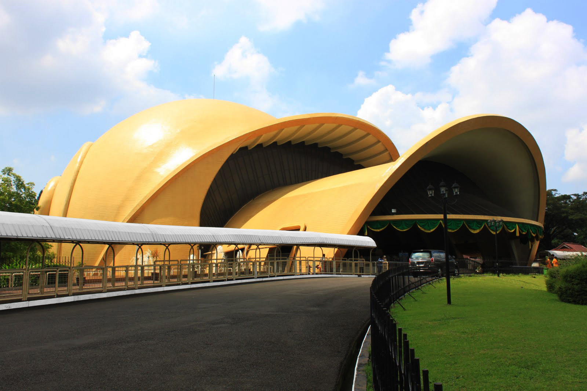
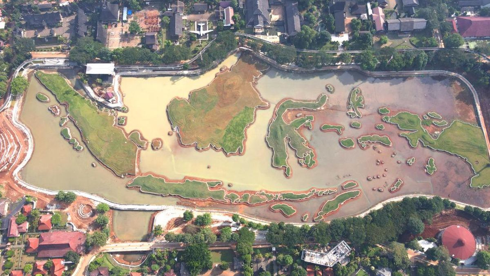
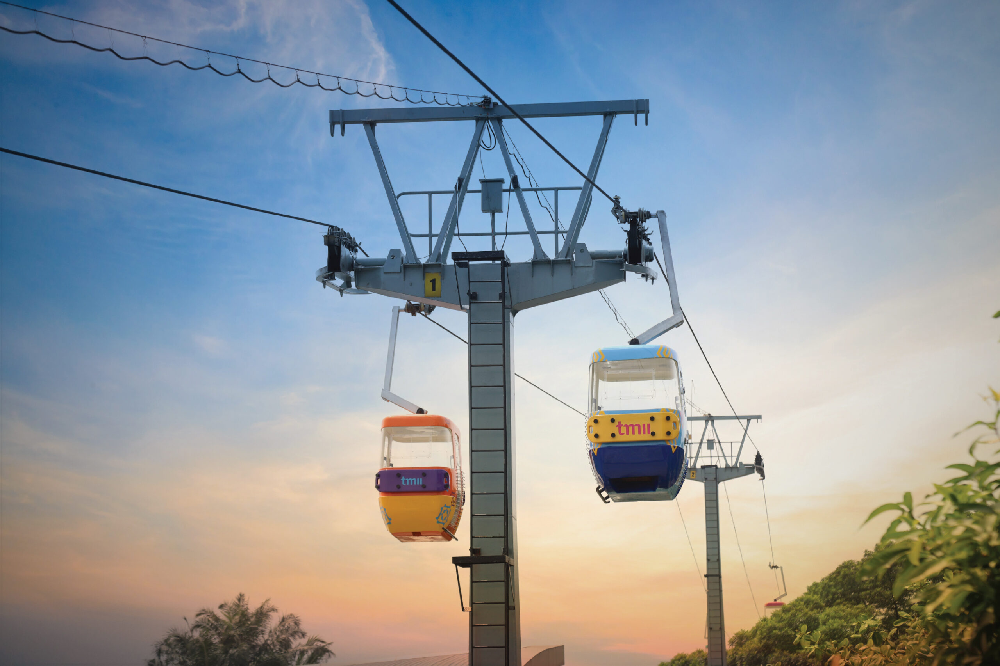

Jelajahi keindahan 34 provinsi dalam satu destinasi bersejarah





Ide pendirian taman mini yang menampilkan kebudayaan seluruh Indonesia dicetuskan oleh Siti Hartinah (Ibu Tien Soeharto) pada tahun 1971.
Proses pembebasan lahan seluas 146 hektare di Jakarta Timur dimulai, menggantikan permukiman warga dengan kompensasi resmi.
TMII resmi dibuka pada 20 April 1975 oleh Presiden Soeharto. Dilengkapi 27 Anjungan Daerah pertama yang merepresentasikan provinsi Indonesia.
Pemerintah melalui Kemensetneg melakukan revitalisasi besar-besaran, mempercantik fasilitas dan wahana untuk menyambut generasi baru pengunjung.
Dengan 34 anjungan provinsi, 16 museum, berbagai wahana dan danau buatan, TMII tetap menjadi ikon pariwisata dan budaya kebanggaan Indonesia.
